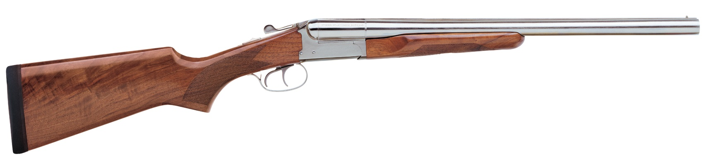

The Stoeger Coach Gun is a modern recreation of the traditional short-barreled shotguns used by stagecoach guards in the American Old West. Known for its rugged simplicity and quick handling, it features a double-trigger system and a break-action design that allows for rapid reloading. While historically a tool for defense, it has become a staple in Cowboy Action Shooting and remains a popular choice for home security and wilderness protection.
| Feature | Standard Stoeger coach gun |
|---|---|
| Type | Side-by-side (SxS), break-action double-barrel shotgun |
| Caliber | 12 Gauge or 20 Gauge |
| Capacity | 2 rounds |
| Barrel | Length 20 inches (508 mm) |
| Weight | ~6.5 lbs (2.95 kg) |
| Sights | Brass bead front sight |